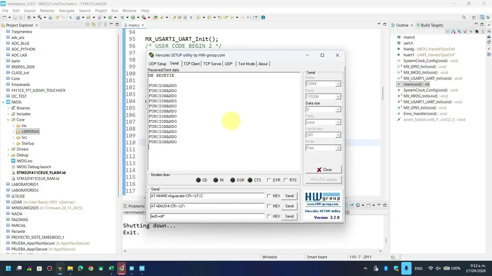

En System Core están el IWDG (independiente, con su propio reloj) y el WWDG (dependiente del reloj del sistema). Activamos el IWDG.
Es el que se usa en equipos médicos, industriales o no tripulados para que el sistema se recupere solo si se bloquea.
El IWDG tiene su propio reloj interno (LSI de unos 32 kHz), así que sigue funcionando aunque falle el reloj principal o el programa se cuelgue. Es un contador de 12 bits que baja desde el valor de recarga; si llega a cero sin que lo refresquemos, resetea el micro. Calculamos el prescaler y el reload para 2 s, lo activamos en CubeMX, y con mensajes por serial vemos cómo se resetea si no se refresca, cómo evitarlo con HAL_IWDG_Refresh y cómo detecta un ciclo infinito.

En System Core están el IWDG (independiente, con su propio reloj) y el WWDG (dependiente del reloj del sistema). Activamos el IWDG.
Es el que se usa en equipos médicos, industriales o no tripulados para que el sistema se recupere solo si se bloquea.
El contador es de 12 bits (máximo 4095) y cuenta hacia abajo con el reloj LSI (~32 kHz) dividido por el prescaler (4, 8, 16, 32...).
Tiempo = prescaler × reload / 32000. Para 2 s: con prescaler 16 el reload es 4000; con prescaler 32, 2000. Con prescaler 8 daría 8000, que supera 4095 y no sirve.
// tiempo (s) = prescaler * reload / 32000
// 2 s con prescaler 32 -> reload = 2000Al reload se le resta 1 en CubeMX: 2000-1.
IWDG counter clock prescaler = 32 y down-counter reload value = 2000-1.
Activamos también USART1 para ver los mensajes, nombramos el proyecto IWDG y generamos código.
Creamos la carpeta LIBRERIAS, copiamos uart.c/.h, la agregamos al path y la incluimos en main.c.
#include "uart.h"Al arrancar enviamos "ME RESETIE" para ver cuándo se reinicia, con un retardo de 500 ms.
Movemos MX_IWDG_Init() al punto donde queremos que empiece a contar: desde ahí, si pasan más de 2 s sin refrescarlo, hay reset.
/* USER CODE BEGIN 2 */
uartx_write_text(&huart1, "ME RESETIE\r\n\r\n");
HAL_Delay(500);
MX_IWDG_Init(); // aqui empieza a contarEn el while enviamos "FUNCIONANDO" cada 200 ms sin refrescar el watchdog.
En Hercules salen unos 10 "FUNCIONANDO" y luego "ME RESETIE": a los 2 s el IWDG reinició el micro.
while (1)
{
uartx_write_text(&huart1, "FUNCIONANDO\r\n");
HAL_Delay(200);
}Con HAL_IWDG_Refresh(&hiwdg) se recarga el contador. Si lo llamamos en cada vuelta y cada vuelta dura menos de 2 s, nunca hay reset.
while (1)
{
uartx_write_text(&huart1, "FUNCIONANDO\r\n");
HAL_IWDG_Refresh(&hiwdg);
HAL_Delay(200);
}Si un ciclo tarda más que el tiempo programado (por ejemplo un retardo de 3 s), habrá reset aunque refresques.
Refrescamos y luego entramos en un while(1) que no refresca: a los 2 s el micro se resetea y sigue funcionando. Así se recupera de un bloqueo.
HAL_IWDG_Refresh(&hiwdg);
while(1); // bloqueo: a los 2 s hay resetSi un ciclo debe durar mucho, se refresca dentro de él. Mientras se esté refrescando no hay reset; si algo lo bloquea fuera del refresco, el IWDG reinicia.
while(1) HAL_IWDG_Refresh(&hiwdg); // no hay resetAntes de llamar un procedimiento que sospechas que se bloquea, refresca el watchdog. Si sabes que ese procedimiento debe tardar menos que el tiempo programado y aun así hay reset, ese código se está bloqueando y hay que corregirlo.